특수용접기능사 (2012-07-22 기출문제)
1과목: 용접일반
1. 다음 중 TIG 용접에 있어 직류 정극성에 관한 설명으로 틀린 것은?
- 용입이 깊고, 비드 폭은 좁다.
- 극성의 기호를 DCSP로 나타낸다.
- 산화피막을 제거하는 청정 작용이 있다.
- 모재에는 양(＋)극을, 홀더(토치)에는 음(-)극을 연결한다.
(정답률: 75%)

2. 다음 중 피복 아크 용접봉에서 피복제의 역할이 아닌 것은?
- 아크의 안정
- 용착금속에 산소공급
- 용착금속의 급랭 방지
- 용착금속의 탈산 정련작용
(정답률: 82%)
3. 다음 중 아크 용접에서 아크 쏠림의 방지 대책으로 틀린 것은?
- 접지점 두 개를 연결할 것
- 접지점을 용접부에서 멀리할 것
- 용접봉 끝을 아크 쏠림 방향으로 기울일 것
- 직류 아크 용접을 하지 말고 교류용접을 할 것
(정답률: 85%)
4. 다음 중 KS상 용접봉 홀더의 종류가 200호일 때 정격 용접전류는 몇 A 인가?
- 160
- 200
- 250
- 300
(정답률: 91%)
5. 다음 중 가스 용접에서 역화의 원인과 가장 거리가 먼 것은?
- 팁이 과열되었을 때
- 팁 구멍이 막혔을 때
- 팁과 모재가 멀리 떨어졌을 때
- 팁 구멍이 확대 변형되었을 때
(정답률: 71%)
6. 다음 중 용접법의 분류에 있어 금속전극을 사용한 아크 용접에서 보호아크를 사용하는 용접법이 아닌 것은?
- 와이어 아크 용접
- 피복 금속 아크 용접
- 이산화탄소 아크 용접
- 서브머지드 아크 용접
(정답률: 55%)
7. 다음 중 피복제가 습기를 흡수하기 쉽기 때문에 사용하기 전에 300~350℃로 1~2시간 정도 건조해서 사용해야 하는 용접봉은?
- E4301
- E4311
- E4316
- E4340
(정답률: 82%)
8. 다음 중 스카핑(scarfing)에 관한 설명으로 옳은 것은?
- 용접 결함부의 제거, 용접 홈의 준비 및 절단, 구멍 뚫기 등을 통틀어 말한다.
- 침몰선의 해체나 교량의 개조, 항만과 방파제 공사 등에 주로 사용된다.
- 용접 부분의 뒷면 또는 U형, H형의 용접 홈을 가공하기 위해 둥근 홈을 파는데 사용되는 공구이다.
- 강재 표면의 홈이나 개재물, 탈탄층 등을 제거하기 위하여 가능한 한 얇게 표면을 깎아 내는 가공법이다.
(정답률: 81%)
9. 판 두께가 20㎜인 스테인리스강을 220A 전류와 2.5kgf/㎠ 의 산소 압력으로 산소아크 절단하고자 할 때 다음 중 가장 알맞은 절단 속도는?
- 85㎜/min
- 120㎜/min
- 150㎜/min
- 200㎜/min
(정답률: 32%)
10. 다음 중 가동 철심형 교류 아크 용접기의 특성으로 틀린 것은?
- 광범위한 전류 조정이 쉽다.
- 미세한 전류 조정이 가능하다.
- 가동 부분의 마멸로 철심의 진동이 생긴다.
- 가동 철심으로 누설 자속을 가감하여 전류를 조정한다.
(정답률: 50%)
11. 15℃, 15기압에서 50L 아세틸렌 용기에 아세톤 21L가 포화, 흡수되어 있다. 이 용기에는 약 몇 L 의 아세틸렌을 용해시킬 수 있는가?
- 5875
- 7375
- 7875
- 8385
(정답률: 55%)
12. 다음 중 산소-아세틸렌 가스 용접의 단점이 아닌 것은?
- 열효율이 낮다.
- 폭발할 위험이 있다.
- 가열시간이 오래 걸린다.
- 가열할 때 열량의 조절이 제한적이다.
(정답률: 52%)
13. 다음 중 연강용 가스 용접봉의 성분이 모재에 미치는 영향으로 틀린 것은?
- 인(P) : 강에 취성을 주며 가연성을 잃게 한다.
- 규소(Si) : 기공은 막을 수 있으나 강도가 떨어지게 된다.
- 탄소(C) : 강의 강도를 증가시키지만 연신율, 굽힘성이 감소된다.
- 유황(S) : 용접부의 저항력은 증가하지만 기공 발생의 원인이 된다.
(정답률: 50%)
14. 다음 중 용접용 케이블을 접속하는데 사용되는 것이 아닌 것은?
- 케이블 러그(cable lug)
- 케이블 조인트(cable joint)
- 용접 고정구(welding fixture)
- 케이블 커넥터(cable connector)
(정답률: 75%)
15. 다음 중 산소-아세틸렌 용접법에서 전진법과 비교한 후진법의 설명으로 틀린 것은?
- 용접 속도가 느리다.
- 열 이용률이 좋다.
- 용접변형이 작다.
- 홈 각도가 작다.
(정답률: 77%)
16. 다음 중 산소용기에 표시된 기호 “TP”가 나타내는 뜻으로 옳은 것은?
- 용기의 내용적
- 용기의 내압시험압력
- 용기의 중량
- 용기의 최고충전압력
(정답률: 72%)
17. 다음 중 가스 절단 결과에 영향을 미치는 예열 불꽃의 세기가 강할 때 현상으로 틀린 것은?
- 드래그가 증가한다.
- 절단면이 거칠어진다.
- 모서리가 용융되어 둥글게 된다.
- 슬래그 중의 철 성분의 박리가 어려워진다.
(정답률: 66%)
18. 다음 중 작업자가 연강판을 잘라 슬래그 해머(Hammer)를 만들어 담금질을 하였으나, 경도가 높아지지 않았을 때 가장 큰 이유에 해당하는 것은?
- 단조를 하지 않았기 때문이다.
- 탄소 함유량이 적었기 때문이다.
- 망간의 함유량이 적었기 때문이다.
- 가열온도가 맞지 않았기 때문이다.
(정답률: 61%)
19. 탄소강에 특정한 기계적 성질을 개선하기 위해 여러 가지 합금원소를 첨가하는데 다음 중 탈산제로의 사용 이외에 황의 나쁜 영향을 제거하는데도 중요한 역할을 하는 것은?
- 크롬(Cr)
- 니켈(Ni)
- 망간(Mn)
- 바나듐(V)
(정답률: 69%)
20. 다음 중 화염경화 처리의 특징과 가장 거리가 먼 것은?
- 설비비가 싸다.
- 담금질 변형이 적다.
- 가열온도의 조절이 쉽다.
- 부품의 크기나 형상에 제한이 없다.
(정답률: 36%)
21. 다음 중 60~70%니켈(Ni) 합금으로 내식성, 내마모성이 우수하여 터빈날개, 펌프 임펠러 등에 사용되는 것은?
- 콘스탄탄(Constantan)
- 모넬메탈(Monel metal)
- 커프로니켈(Cupro nickel)
- 문쯔메탈(Muntz metal)
(정답률: 46%)
22. 다음 중 공정 주철의 탄소함유량으로 가장 적합한 것은?
- 1.3%C
- 2.3%C
- 4.3%C
- 6.3%C
(정답률: 51%)
23. 다음 중 탄소량의 증가에 따라 감소되는 것은?
- 비열
- 열전도도
- 전기저항
- 항자력
(정답률: 58%)
24. 다음 중 불변강(invariable steel)에 속하지 않는 것은?
- 인바(Invar)
- 엘린바(elinvar)
- 플래티나이트(platinite)
- 선플래티넘(sun-platinum)
(정답률: 62%)
25. 다음 중 용접시 용접균열이 발생할 위험성이 가장 높은 재료는?
- 저탄소강
- 중탄소강
- 고탄소강
- 순철
(정답률: 66%)
26. 다음 중 재료의 온도상승에 따라 강도는 저하되지 않고 내식성을 가지는 PH형 스테인리스강은?
- 석출경화형 스테인리스강
- 오스테나이트계 스테인리스강
- 마텐자이트계 스테인리스강
- 페라이트계 스테인리스강
(정답률: 44%)
27. 다음 중 오스테나이트계 스테인리스강 용접시 입계부식을 방지하기 위한 조치로 가장 적절한 것은?
- 예열과 후열을 한다.
- 탄소량을 증가 시켜 Cr4C 탄화물의 생성을 방지한다.
- Cr4C의 생성을 돕기 위해 Ti 이나 Nb를 첨가한다.
- 1⑤0~1100℃ 정도로 가열하여 Cr4C 탄화물을 분해 후 급냉한다.
(정답률: 35%)
28. 다음 중 고강도 황동으로 델타 메탈(delta metal)의 성분을 올바르게 나타낸 것은?
- 6:4 황동에 철을 1~2% 첨가
- 7:3 황동에 주석을 3%내의 첨가
- 6:4 황동에 망간을 1~2% 첨가
- 7:3 황동에 니켈을 9%내의 첨가
(정답률: 51%)
29. 다음 중 용접 결함의 보수 용접에 관한 사항으로 가장 적절하지 않은 것은?
- 재료의 표면에 있는 얕은 결함은 덧붙임 용접으로 보수한다.
- 언더컷이나 오버랩 등은 그대로 보수 용접을 하거나 정으로 따내기 작업을 한다.
- 결함이 제거된 모재 두께가 필요한 치수보다 얕게 되었을 때에는 덧붙임 용접으로 보수한다.
- 덧붙임 용접으로 보수할 수 있는 한도를 초과할 때에는 결함부분을 잘라내어 맞대기 용접으로 보수한다.
(정답률: 33%)
30. 다음 중 테르밋 용접의 특징에 관한 설명으로 틀린 것은?
- 전기가 필요 없다.
- 용접 작업이 단순하다.
- 용접 시간이 길고, 용접 후 변형이 크다.
- 용접기구가 간단하고, 작업장소의 이동이 쉽다.
(정답률: 80%)
31. 15℃, 1kgf/cm2 하에서 사용 전 용해아세틸렌 병의 무게가 50kgf 이고, 사용 후 무게가 45kgf 일 때 사용한 아세틸렌의 양은 약 몇 L 인가?
- 2715
- 3178
- 3620
- 4525
(정답률: 54%)
32. 산업안전보건법상 안전보건표지에 사용되는 색채 중 안내를 나타내는 색채는?
- 빨강
- 녹색
- 파랑
- 노랑
(정답률: 58%)
33. 다음 중 MIG 용접시 크레이터 처리 기능에 의해 낮아진 전류가 서서히 줄어들면서 아크가 끊어지는 기능으로 이면 용접부가 녹아내리는 것을 방지하는 기능과 가장 관련이 깊은 것은?
- 스타트 시간(start time)
- 번 백 시간(burn back time)
- 슬로우 다운 시간(slow down time)
- 크레이터 충전시간(crate fill time)
(정답률: 61%)
34. 다음 중 용접작업에 있어 언더컷이 발생하는 원인으로 가장 적절한 경우는?
- 전류가 너무 낮은 경우
- 아크 길이가 너무 짧은 경우
- 용접 속도가 너무 느린 경우
- 부적당한 용접봉을 사용한 경우
(정답률: 55%)
35. 다음 중 CO2가스 아크 용접에서 복합 와이어에 관한 설명으로 틀린 것은?
- 비드 외관이 깨끗하고 아름답다.
- 양호한 용착금속을 얻을 수 있다.
- 아크가 안정되어 스패터가 많이 발생한다.
- 용제에 탈산제, 아크안정제 등 합금 원소가 첨가되어 있다.
(정답률: 80%)
2과목: 용접재료
36. 다음 중 스테인리스 클래드강 용접 등 이종재 용접시 발생될 수 있는 문제점과 가장 거리가 먼 것은?
- 용접 경계부의 연성저하
- 합금원소의 HAZ 입계 침투
- 용입량에 의한 내식성 저하
- 재열균열 등 용접균열이 발생
(정답률: 53%)
37. 다음 중 용접이음에 대한 설명으로 틀린 것은?
- 필릿 용접에서는 형상이 일정하고, 미용착부가 없어 응력분포상태가 단순하다.
- 맞대기 용접이음에서 시점과 크레이터 부분에서는 비드가 급냉하여 결함을 가져오기 쉽다.
- 전면 필릿 용접이란 용접선의 방향이 하중의 방향과 거의 직각인 필릿 용접을 말한다.
- 겹치기 필릿 용접에서는 루트부에 응력이 집중되기 때문에 보통 맞대기 이음에 비하여 피로강도가 낮다.
(정답률: 39%)
38. 다음 중 감전에 의한 재해를 방지하기 위한 우리나라의 안전전압으로 옳은 것은?
- 12V
- 30V
- 45V
- 60V
(정답률: 58%)
39. 서브머지드 아크 용접에서 용제를 사용하는 경우 다음 중 용제의 작용으로 틀린 것은?
- 누전 방지
- 능률적인 용접작업
- 용입의 용이
- 열에너지의 발산방지
(정답률: 57%)
40. 다음 중 전기저항 용접에서 모재를 맞대어 놓고 동일 재질의 박판을 대고 가압하여 심(seam)하는 용접 방법은?
- 맞대기 심 용접
- 겹치기 심 용접
- 포일 심 용접
- 매시 심 용접
(정답률: 33%)
41. 다음 중 연납용 용제가 아닌 것은?
- 붕산(H3BO3)
- 염화아연(ZnCl2)
- 염산(HCl)
- 염화암모늄(NH4Cl)
(정답률: 62%)
42. 다음 중 한 부분의 몇 층을 용접하다가 다음 부분의 층으로 연속시켜 전체가 계단형으로 이루어지도록 용착시켜 나가는 용접법은?
- 덧살 올림법
- 전진 블록법
- 스킵법
- 케스케이드법
(정답률: 69%)
43. 다음 중 용접 작업에서 전류 밀도가 가장 높은 용접은?
- 피복금속 아크 용접
- 산소-아세틸렌 용접
- 불활성 가스 금속 아크 용접
- 불활성 가스 텅스텐 아크 용접
(정답률: 46%)
44. TIG 용접 작업에서 아크 부근의 풍속이 일반적으로 몇 m/s 이상이면 보호가스 작용이 흩어지므로 방풍막을 설치하는가?
- 0.⑤
- 0.1
- 0.3
- 0.5
(정답률: 47%)
45. 용접 결함을 구조상 결함과 치수상 결함으로 분류할 때 다음 중 치수상 결함에 해당하는 것은?
- 용입 불량
- 슬래그 섞임
- 언더킷
- 형상불량
(정답률: 71%)
46. 다음 중 용제와 와이어가 분리되어 공급되고 아크가 용제속에서 일어나며 잠호 용접이라 불리는 용접은?
- MIG 용접
- 일렉트로 슬랙 용접
- 시임 용접
- 서브머지드 아크 용접
(정답률: 81%)
47. 다음 중 수평 필릿 용접시 이론 목두께는 필릿 용접의 크기(다리길이)의 약 몇 % 정도인가?
- 50
- 70
- 160
- 180
(정답률: 63%)
48. 다음 중 용접부 시험방법에 있어 충격시험의 방식에 해당하는 것은?
- 브리넬식
- 로크웰식
- 샤르피식
- 비커스식
(정답률: 67%)
49. 다음 중 목재, 섬유류, 종이 등에 의한 화재의 급수에 해당하는 것은?
- A급
- B급
- C급
- D급
(정답률: 74%)
50. 다음 중 전자 빔 용접에 관한 설명으로 틀린 것은?
- 박판 용접을 주로 하며, 용입이 낮아 후판 용접에는 적용이 어렵다.
- 성분 변화에 의하여 용접부의 기계적 성질이나 내식성의 저하를 가져올 수 있다.
- 가공재나 열처리에 대하여 소재의 성질을 저하시키지 않고 용접할 수 있다.
- 10-4~10-6/㎜Hg 정도의 높은 진공실 속에서 음극으로부터 방출된 전자를 고전압으로 가속시켜 용접을 한다.
(정답률: 52%)
3과목: 기계제도
51. 그림과 같은 입체도에서 화살표방향으로 본 투상도로 적합한 것은?
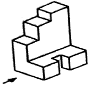
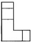
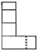
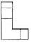
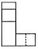
(정답률: 69%)
52. 그림에서 A부분의 대각선으로 그린 “X” (가는 실선) 부분이 의미하는 것은?
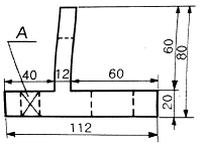
- 사각뿔
- 평면
- 원통면
- 대칭면
(정답률: 56%)
53. 핸들, 바퀴의 암과 림, 리브, 훅, 축 등은 주로 단면의 모양을 90° 회전하여 단면 전후를 끊어서 그 사이에 그리거나 하는데 이러한 단면도를 무엇이라고 하는가?
- 부분 단면도
- 온 단면도
- 한쪽 단면도
- 회전도시 단면도
(정답률: 84%)
54. 위쪽이 보기와 같이 경사지게 절단된 원통의 전개방법으로 가장 적당한 것은?
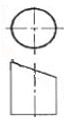
- 삼각형 전개법
- 방사선 전개법
- 평행선 전개법
- 사변형 전개법
(정답률: 69%)
55. 용접부 표면 또는 용접부 형상의 설명과 보조기호 연결이 틀린 것은?
- : 평면
- : 볼력형
- : 토우를 매끄럽게 함
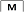
: 제거 가능한 이면 판재 사용
(정답률: 74%)
56. 단면도의 표시에 대한 설명으로 틀린 것은?
- 상하 또는 좌우 대칭인 물체는 외형과 단면을 동시에 나타낼 수 있다.
- 기본 중심선이 아닌 곳은 절단면으로 표시할 수는 없다.
- 단면도를 나타낼 시 같은 절단면상에 나타나는 같은 부품의 단면에는 같은 해칭(또는 스머징)을 한다.
- 원칙적으로 축, 볼트, 리브 등은 길이 방향으로 절단하지 아니한다.
(정답률: 52%)
57. 그림과 같은 제3각 투상도의 입체도로 가장 적합한 것은?
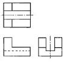
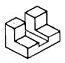
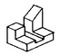
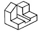
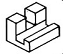
(정답률: 84%)
58. 기계제도에서 가상선의 용도에 해당하지 않는 것은?
- 인접부분을 참고로 표시하는 데 사용
- 도시된 단면의 앞쪽에 있는 부분을 표시하는 데 사용
- 가동하는 부분을 이동한계의 위치로 표시하는 데 사용
- 부분 단면도를 그릴 경우 절단위치를 표시하는 데 사용
(정답률: 39%)
59. 기계제도에서 폭이 50㎜, 두께가 7㎜, 길이가 1000㎜ 인 등변 ㄱ 형강의 표시를 바르게 나타낸 것은?
- L 7×50×50 -1000
- L × 7×50×50 -1000
- L 50×50×7 -1000
- L -50×50×7 -1000
(정답률: 54%)
60. 그림과 같은 배관 도시기호에서 계기표시가 압력계일 때 원 안에 사용하는 글자 기호는?
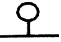
- A
- P
- T
- F
(정답률: 72%)